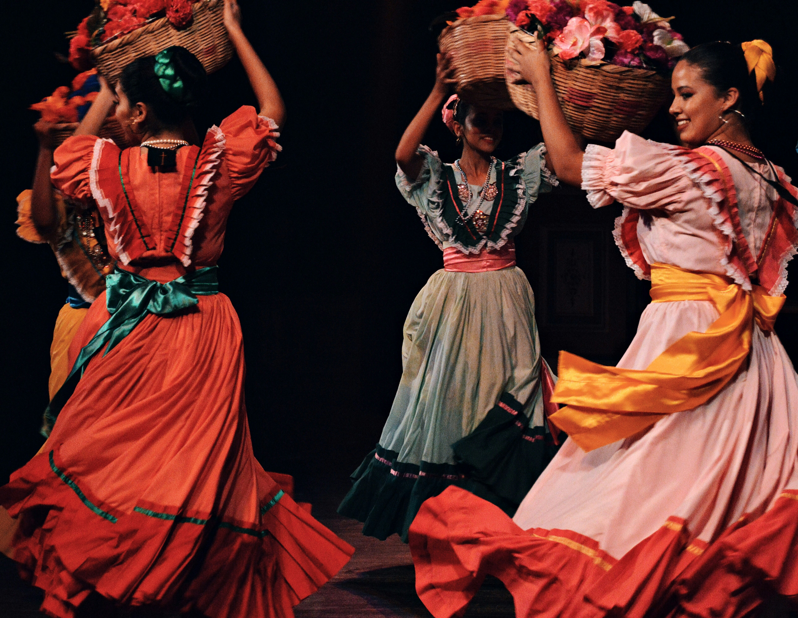

01 — FLAMENCO
Lahir di Andalusia, Flamenco merupakan perpaduan emosional antara nyanyian, permainan gitar, dan tarian. Seni ini menjadi simbol budaya paling ikonik di Sevilla dan Spanyol.
- Warisan Budaya Takbenda UNESCO
- Berasal dari komunitas Romani Andalusia
- Terdiri dari cante, toque, dan baile